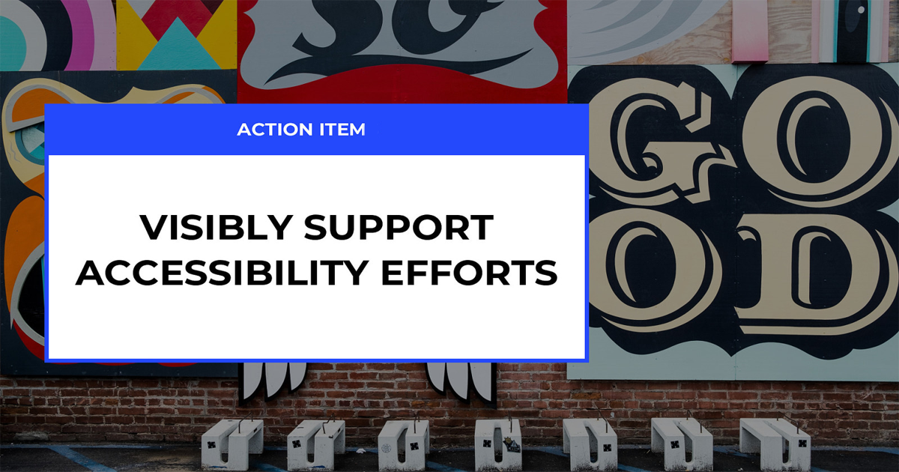

It's easy for someone to say, "just convince management to do it." But what does that really mean? Especially when it comes to digital accessibility, companies want to help but have no idea where to get started.
This document seeks to outline the places where public, open-source work would benefit from funding, and such work would also improve the state of accessibility (a11y) across the web.
Areas
Here are some areas that I've identified as potential funding opportunities. For the major initiatives, I've outlined what specifically would be useful to fund, and highlighted some rationales for why.
- ARIA documentation
- Education and training
- Developer advocacy
- Automated tooling
- Cross-browser efforts
- Cross-specification efforts
- JavaScript Frameworks
In general, a11y is a tricky area to work on for several reasons. First, it's not considered as valuable as performance or even CSS, so it is often deprioritized. Second, addressing the complexities of accessibility needs often requires a depth of knowledge that is acquired over years and often at the expense of other parts of engineering, so collaboration is required.
Area: ARIA documentation
What is needed:
Paid positions for a11y experts to focus solely on the improvement of WAI-ARIA documentation.
How this helps:
While it's useful to have representation from different companies on the ARIA working group, not everyone has paid time during work to ship updates. This means there is always a large backlog of work. By securing positions that provide a sole focus on improving documentation, authors will have improved guidance on implementing accessible features. I believe that 2-3 people who spend even just 1-2 years on this could make a world of difference.
Area: Education and Training
What is needed:
- Education and training on par with other areas of web development
- Education materials for other specification groups
How this helps:
While A11y is sometimes included in other areas of learning, it needs to be given more depth across the board.
Area: Developer Advocacy
What is needed:
Developer advocates who can focus on accessibility.
How this helps:
It's possible that this folds into the area above. Perhaps ensuring that there are developer advocates for accessibility and that they are treated with the same priority and regard as in other areas, is the appropriate request here. More thought is needed on the specific ask and whether or not this should combine with other categories.
Area: Tooling
What is needed:
- More open-source analysis on all success criteria that doesn't have the ulterior motive of selling auditing services; as an example, here's an open-source side project that starts to address this: A11y Automation Tracker
- Focused efforts to improve linting in a performant, open-source way (think eslint or ember-template-lint)
- Focused efforts to improve accessibility testing
- Additional tools. Example idea: CLI that allows the developer to "navigate" a site based on only info from the CLI, and similar to what a user with a screen-reader experiences
- Test harness for WAI-ARIA spec (add link to issue)
How this helps:
- Innovation is inspiring!
- It improves the DX for creating accessible sites/apps
- Sometimes tooling can be open-source code but outside input is not welcome, so additional "competing" products can still be useful
Has this inspired you to talk about funding improvements for accessibility on the web? I hope so! If you need help, let's chat.